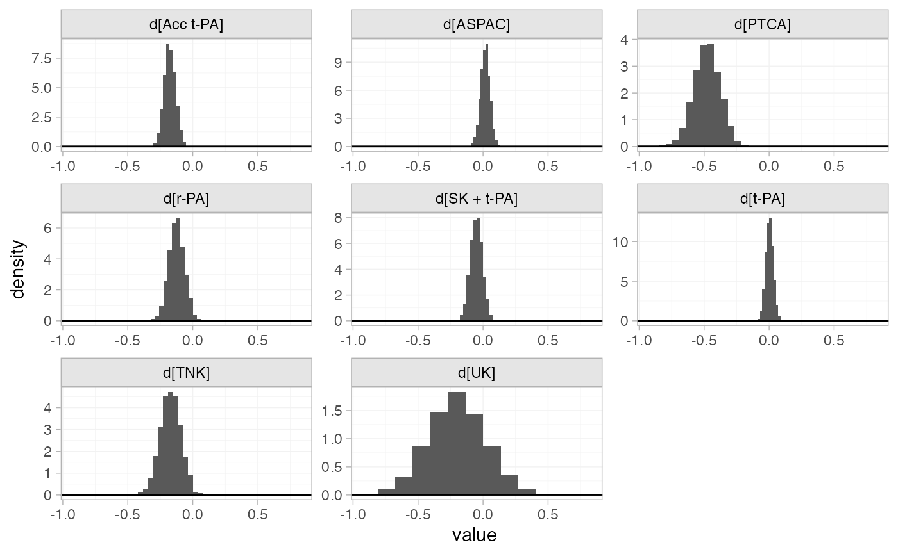

Example: Thrombolytic treatments
Source:vignettes/example_thrombolytics.Rmd
example_thrombolytics.Rmd
library(multinma)
options(mc.cores = parallel::detectCores())#> For execution on a local, multicore CPU with excess RAM we recommend calling
#> options(mc.cores = parallel::detectCores())
#>
#> Attaching package: 'multinma'
#> The following objects are masked from 'package:stats':
#>
#> dgamma, pgamma, qgammaThis vignette describes the analysis of 50 trials of 8 thrombolytic drugs (streptokinase, SK; alteplase, t-PA; accelerated alteplase, Acc t-PA; streptokinase plus alteplase, SK+tPA; reteplase, r-PA; tenocteplase, TNK; urokinase, UK; anistreptilase, ASPAC) plus per-cutaneous transluminal coronary angioplasty (PTCA) (Boland et al. 2003; Lu and Ades 2006; Dias et al. 2011). The number of deaths in 30 or 35 days following acute myocardial infarction are recorded. The data are available in this package as thrombolytics:
head(thrombolytics)
#> studyn trtn trtc r n
#> 1 1 1 SK 1472 20251
#> 2 1 3 Acc t-PA 652 10396
#> 3 1 4 SK + t-PA 723 10374
#> 4 2 1 SK 9 130
#> 5 2 2 t-PA 6 123
#> 6 3 1 SK 5 63Setting up the network
We begin by setting up the network. We have arm-level count data giving the number of deaths (r) out of the total (n) in each arm, so we use the function set_agd_arm(). By default, SK is set as the network reference treatment.
thrombo_net <- set_agd_arm(thrombolytics,
study = studyn,
trt = trtc,
r = r,
n = n)
thrombo_net
#> A network with 50 AgD studies (arm-based).
#>
#> ------------------------------------------------------- AgD studies (arm-based) ----
#> Study Treatments
#> 1 3: SK | Acc t-PA | SK + t-PA
#> 2 2: SK | t-PA
#> 3 2: SK | t-PA
#> 4 2: SK | t-PA
#> 5 2: SK | t-PA
#> 6 3: SK | t-PA | ASPAC
#> 7 2: SK | t-PA
#> 8 2: SK | t-PA
#> 9 2: SK | t-PA
#> 10 2: SK | SK + t-PA
#> ... plus 40 more studies
#>
#> Outcome type: count
#> ------------------------------------------------------------------------------------
#> Total number of treatments: 9
#> Total number of studies: 50
#> Reference treatment is: SK
#> Network is connectedPlot the network structure.
plot(thrombo_net, weight_edges = TRUE, weight_nodes = TRUE)
Fixed effects NMA
Following TSD 4 (Dias et al. 2011), we fit a fixed effects NMA model, using the nma() function with trt_effects = "fixed". We use \(\mathrm{N}(0, 100^2)\) prior distributions for the treatment effects \(d_k\) and study-specific intercepts \(\mu_j\). We can examine the range of parameter values implied by these prior distributions with the summary() method:
summary(normal(scale = 100))
#> A Normal prior distribution: location = 0, scale = 100.
#> 50% of the prior density lies between -67.45 and 67.45.
#> 95% of the prior density lies between -196 and 196.The model is fitted using the nma() function. By default, this will use a Binomial likelihood and a logit link function, auto-detected from the data.
thrombo_fit <- nma(thrombo_net,
trt_effects = "fixed",
prior_intercept = normal(scale = 100),
prior_trt = normal(scale = 100))
#> Note: Setting "SK" as the network reference treatment.Basic parameter summaries are given by the print() method:
thrombo_fit
#> A fixed effects NMA with a binomial likelihood (logit link).
#> Inference for Stan model: binomial_1par.
#> 4 chains, each with iter=2000; warmup=1000; thin=1;
#> post-warmup draws per chain=1000, total post-warmup draws=4000.
#>
#> mean se_mean sd 2.5% 25% 50% 75% 97.5% n_eff Rhat
#> d[Acc t-PA] -0.18 0.00 0.04 -0.26 -0.21 -0.18 -0.15 -0.09 3008 1
#> d[ASPAC] 0.02 0.00 0.04 -0.05 -0.01 0.02 0.04 0.09 5674 1
#> d[PTCA] -0.48 0.00 0.10 -0.68 -0.54 -0.47 -0.41 -0.29 3953 1
#> d[r-PA] -0.12 0.00 0.06 -0.23 -0.16 -0.12 -0.08 -0.01 3870 1
#> d[SK + t-PA] -0.05 0.00 0.05 -0.14 -0.08 -0.05 -0.02 0.04 5651 1
#> d[t-PA] 0.00 0.00 0.03 -0.06 -0.02 0.00 0.02 0.06 4883 1
#> d[TNK] -0.17 0.00 0.08 -0.33 -0.22 -0.17 -0.12 -0.02 4221 1
#> d[UK] -0.19 0.00 0.22 -0.64 -0.35 -0.19 -0.05 0.24 4814 1
#> lp__ -43042.81 0.14 5.42 -43054.46 -43046.19 -43042.52 -43039.15 -43033.19 1458 1
#>
#> Samples were drawn using NUTS(diag_e) at Fri Dec 4 18:18:52 2020.
#> For each parameter, n_eff is a crude measure of effective sample size,
#> and Rhat is the potential scale reduction factor on split chains (at
#> convergence, Rhat=1).By default, summaries of the study-specific intercepts \(\mu_j\) are hidden, but could be examined by changing the pars argument:
The prior and posterior distributions can be compared visually using the plot_prior_posterior() function:
plot_prior_posterior(thrombo_fit, prior = "trt")
Model fit can be checked using the dic() function
(dic_consistency <- dic(thrombo_fit))
#> Residual deviance: 105.8 (on 102 data points)
#> pD: 58.6
#> DIC: 164.4and the residual deviance contributions examined with the corresponding plot() method.
plot(dic_consistency)
There are a number of points which are not very well fit by the model, having posterior mean residual deviance contributions greater than 1.
Checking for inconsistency
We fit an unrelated mean effects (UME) model (Dias et al. 2011) to assess the consistency assumption. Again, we use the function nma(), but now with the argument consistency = "ume".
thrombo_fit_ume <- nma(thrombo_net,
consistency = "ume",
trt_effects = "fixed",
prior_intercept = normal(scale = 100),
prior_trt = normal(scale = 100))
#> Note: Setting "SK" as the network reference treatment.
thrombo_fit_ume
#> A fixed effects NMA with a binomial likelihood (logit link).
#> An inconsistency model ('ume') was fitted.
#> Inference for Stan model: binomial_1par.
#> 4 chains, each with iter=2000; warmup=1000; thin=1;
#> post-warmup draws per chain=1000, total post-warmup draws=4000.
#>
#> mean se_mean sd 2.5% 25% 50% 75% 97.5%
#> d[Acc t-PA vs. SK] -0.16 0.00 0.05 -0.25 -0.19 -0.16 -0.13 -0.06
#> d[ASPAC vs. SK] 0.00 0.00 0.04 -0.07 -0.02 0.01 0.03 0.08
#> d[PTCA vs. SK] -0.67 0.00 0.19 -1.04 -0.79 -0.67 -0.54 -0.30
#> d[r-PA vs. SK] -0.06 0.00 0.09 -0.23 -0.12 -0.06 0.00 0.11
#> d[SK + t-PA vs. SK] -0.04 0.00 0.05 -0.14 -0.08 -0.05 -0.01 0.05
#> d[t-PA vs. SK] 0.00 0.00 0.03 -0.06 -0.02 0.00 0.02 0.06
#> d[UK vs. SK] -0.37 0.01 0.53 -1.45 -0.72 -0.36 0.00 0.64
#> d[ASPAC vs. Acc t-PA] 1.41 0.01 0.41 0.65 1.12 1.40 1.67 2.24
#> d[PTCA vs. Acc t-PA] -0.22 0.00 0.12 -0.45 -0.29 -0.22 -0.14 0.01
#> d[r-PA vs. Acc t-PA] 0.02 0.00 0.07 -0.11 -0.03 0.02 0.06 0.15
#> d[TNK vs. Acc t-PA] 0.01 0.00 0.06 -0.12 -0.04 0.01 0.05 0.13
#> d[UK vs. Acc t-PA] 0.13 0.01 0.36 -0.56 -0.11 0.13 0.37 0.86
#> d[t-PA vs. ASPAC] 0.31 0.01 0.37 -0.40 0.06 0.30 0.55 1.04
#> d[t-PA vs. PTCA] 0.55 0.01 0.42 -0.25 0.27 0.54 0.83 1.39
#> d[UK vs. t-PA] -0.29 0.00 0.35 -0.99 -0.53 -0.29 -0.06 0.38
#> lp__ -43039.85 0.16 5.94 -43052.21 -43043.79 -43039.49 -43035.72 -43029.37
#> n_eff Rhat
#> d[Acc t-PA vs. SK] 6327 1
#> d[ASPAC vs. SK] 5386 1
#> d[PTCA vs. SK] 5453 1
#> d[r-PA vs. SK] 5681 1
#> d[SK + t-PA vs. SK] 6560 1
#> d[t-PA vs. SK] 4104 1
#> d[UK vs. SK] 5252 1
#> d[ASPAC vs. Acc t-PA] 3829 1
#> d[PTCA vs. Acc t-PA] 4516 1
#> d[r-PA vs. Acc t-PA] 5980 1
#> d[TNK vs. Acc t-PA] 5768 1
#> d[UK vs. Acc t-PA] 4690 1
#> d[t-PA vs. ASPAC] 4619 1
#> d[t-PA vs. PTCA] 3757 1
#> d[UK vs. t-PA] 5904 1
#> lp__ 1341 1
#>
#> Samples were drawn using NUTS(diag_e) at Fri Dec 4 18:19:03 2020.
#> For each parameter, n_eff is a crude measure of effective sample size,
#> and Rhat is the potential scale reduction factor on split chains (at
#> convergence, Rhat=1).Comparing the model fit statistics
dic_consistency
#> Residual deviance: 105.8 (on 102 data points)
#> pD: 58.6
#> DIC: 164.4
(dic_ume <- dic(thrombo_fit_ume))
#> Residual deviance: 99.9 (on 102 data points)
#> pD: 66.1
#> DIC: 166Whilst the UME model fits the data better, having a lower residual deviance, the additional parameters in the UME model mean that the DIC is very similar between both models. However, it is also important to examine the individual contributions to model fit of each data point under the two models (a so-called “dev-dev” plot). Passing two nma_dic objects produced by the dic() function to the plot() method produces this dev-dev plot:
plot(dic_consistency, dic_ume, show_uncertainty = FALSE)
The four points lying in the lower right corner of the plot have much lower posterior mean residual deviance under the UME model, indicating that these data are potentially inconsistent. These points correspond to trials 44 and 45, the only two trials comparing Acc t-PA to ASPAC. The ASPAC vs. Acc t-PA estimates are very different under the consistency model and inconsistency (UME) model, suggesting that these two trials may be systematically different from the others in the network.
Further results
Relative effects for all pairwise contrasts between treatments can be produced using the relative_effects() function, with all_contrasts = TRUE.
(thrombo_releff <- relative_effects(thrombo_fit, all_contrasts = TRUE))
#> mean sd 2.5% 25% 50% 75% 97.5% Bulk_ESS Tail_ESS Rhat
#> d[Acc t-PA vs. SK] -0.18 0.04 -0.26 -0.21 -0.18 -0.15 -0.09 3037 3467 1
#> d[ASPAC vs. SK] 0.02 0.04 -0.05 -0.01 0.02 0.04 0.09 5719 3286 1
#> d[PTCA vs. SK] -0.48 0.10 -0.68 -0.54 -0.47 -0.41 -0.29 3879 3134 1
#> d[r-PA vs. SK] -0.12 0.06 -0.23 -0.16 -0.12 -0.08 -0.01 3913 2972 1
#> d[SK + t-PA vs. SK] -0.05 0.05 -0.14 -0.08 -0.05 -0.02 0.04 5700 3240 1
#> d[t-PA vs. SK] 0.00 0.03 -0.06 -0.02 0.00 0.02 0.06 4859 2982 1
#> d[TNK vs. SK] -0.17 0.08 -0.33 -0.22 -0.17 -0.12 -0.02 4211 3098 1
#> d[UK vs. SK] -0.19 0.22 -0.64 -0.35 -0.19 -0.05 0.24 4860 2768 1
#> d[ASPAC vs. Acc t-PA] 0.19 0.06 0.08 0.16 0.19 0.23 0.30 3818 3629 1
#> d[PTCA vs. Acc t-PA] -0.30 0.10 -0.49 -0.36 -0.30 -0.23 -0.11 5348 3496 1
#> d[r-PA vs. Acc t-PA] 0.05 0.05 -0.05 0.02 0.05 0.09 0.16 6398 3673 1
#> d[SK + t-PA vs. Acc t-PA] 0.13 0.05 0.03 0.09 0.13 0.16 0.23 5515 3656 1
#> d[t-PA vs. Acc t-PA] 0.18 0.05 0.08 0.14 0.18 0.22 0.28 3563 3468 1
#> d[TNK vs. Acc t-PA] 0.01 0.07 -0.12 -0.04 0.01 0.05 0.14 5629 3473 1
#> d[UK vs. Acc t-PA] -0.02 0.23 -0.46 -0.17 -0.01 0.13 0.42 5023 3179 1
#> d[PTCA vs. ASPAC] -0.49 0.11 -0.70 -0.56 -0.49 -0.42 -0.29 4084 3295 1
#> d[r-PA vs. ASPAC] -0.14 0.07 -0.27 -0.19 -0.14 -0.09 0.00 4215 3551 1
#> d[SK + t-PA vs. ASPAC] -0.07 0.06 -0.18 -0.10 -0.07 -0.03 0.05 5774 3611 1
#> d[t-PA vs. ASPAC] -0.01 0.04 -0.09 -0.04 -0.01 0.01 0.06 6065 3246 1
#> d[TNK vs. ASPAC] -0.19 0.09 -0.36 -0.25 -0.19 -0.13 -0.02 4358 3485 1
#> d[UK vs. ASPAC] -0.21 0.23 -0.65 -0.36 -0.21 -0.06 0.23 4907 2946 1
#> d[r-PA vs. PTCA] 0.35 0.11 0.14 0.28 0.35 0.43 0.57 5572 3324 1
#> d[SK + t-PA vs. PTCA] 0.43 0.11 0.22 0.35 0.43 0.50 0.63 5029 3284 1
#> d[t-PA vs. PTCA] 0.48 0.11 0.28 0.41 0.48 0.55 0.69 3991 3389 1
#> d[TNK vs. PTCA] 0.31 0.12 0.07 0.23 0.31 0.39 0.54 6566 3519 1
#> d[UK vs. PTCA] 0.28 0.25 -0.18 0.12 0.28 0.45 0.76 4749 2956 1
#> d[SK + t-PA vs. r-PA] 0.07 0.07 -0.07 0.03 0.07 0.12 0.21 6293 3011 1
#> d[t-PA vs. r-PA] 0.13 0.07 -0.01 0.08 0.13 0.17 0.25 4099 3459 1
#> d[TNK vs. r-PA] -0.05 0.09 -0.21 -0.11 -0.05 0.01 0.12 8446 3221 1
#> d[UK vs. r-PA] -0.07 0.23 -0.52 -0.23 -0.07 0.08 0.38 5061 2940 1
#> d[t-PA vs. SK + t-PA] 0.05 0.05 -0.06 0.02 0.05 0.09 0.16 5572 3448 1
#> d[TNK vs. SK + t-PA] -0.12 0.08 -0.29 -0.18 -0.12 -0.06 0.04 5755 3313 1
#> d[UK vs. SK + t-PA] -0.14 0.23 -0.59 -0.30 -0.14 0.01 0.30 5013 3097 1
#> d[TNK vs. t-PA] -0.17 0.08 -0.34 -0.23 -0.17 -0.11 -0.01 4356 3520 1
#> d[UK vs. t-PA] -0.20 0.22 -0.63 -0.35 -0.19 -0.05 0.23 4916 2674 1
#> d[UK vs. TNK] -0.02 0.24 -0.49 -0.18 -0.02 0.14 0.44 5140 3145 1
plot(thrombo_releff, ref_line = 0)
Treatment rankings, rank probabilities, and cumulative rank probabilities.
(thrombo_ranks <- posterior_ranks(thrombo_fit))
#> mean sd 2.5% 25% 50% 75% 97.5% Bulk_ESS Tail_ESS Rhat
#> rank[SK] 7.43 0.96 6 7 7 8 9 4314 NA 1
#> rank[Acc t-PA] 3.15 0.80 2 3 3 4 5 3969 3545 1
#> rank[ASPAC] 7.98 1.12 5 7 8 9 9 4619 NA 1
#> rank[PTCA] 1.14 0.36 1 1 1 1 2 3344 3327 1
#> rank[r-PA] 4.39 1.19 2 4 4 5 7 4832 3572 1
#> rank[SK + t-PA] 5.93 1.21 4 5 6 6 9 5519 NA 1
#> rank[t-PA] 7.48 1.10 5 7 8 8 9 4681 NA 1
#> rank[TNK] 3.50 1.28 2 2 3 4 6 5864 3817 1
#> rank[UK] 4.01 2.74 1 2 3 6 9 4699 NA 1
plot(thrombo_ranks)
(thrombo_rankprobs <- posterior_rank_probs(thrombo_fit))
#> p_rank[1] p_rank[2] p_rank[3] p_rank[4] p_rank[5] p_rank[6] p_rank[7] p_rank[8]
#> d[SK] 0.00 0.00 0.00 0.00 0.02 0.14 0.39 0.31
#> d[Acc t-PA] 0.00 0.22 0.47 0.28 0.04 0.00 0.00 0.00
#> d[ASPAC] 0.00 0.00 0.00 0.00 0.02 0.10 0.17 0.28
#> d[PTCA] 0.87 0.13 0.00 0.00 0.00 0.00 0.00 0.00
#> d[r-PA] 0.00 0.06 0.15 0.32 0.36 0.08 0.02 0.01
#> d[SK + t-PA] 0.00 0.00 0.01 0.06 0.27 0.45 0.09 0.06
#> d[t-PA] 0.00 0.00 0.00 0.00 0.03 0.14 0.30 0.32
#> d[TNK] 0.00 0.25 0.29 0.25 0.15 0.04 0.01 0.01
#> d[UK] 0.13 0.35 0.08 0.08 0.10 0.06 0.02 0.02
#> p_rank[9]
#> d[SK] 0.15
#> d[Acc t-PA] 0.00
#> d[ASPAC] 0.43
#> d[PTCA] 0.00
#> d[r-PA] 0.01
#> d[SK + t-PA] 0.05
#> d[t-PA] 0.20
#> d[TNK] 0.01
#> d[UK] 0.16
plot(thrombo_rankprobs)
(thrombo_cumrankprobs <- posterior_rank_probs(thrombo_fit, cumulative = TRUE))
#> p_rank[1] p_rank[2] p_rank[3] p_rank[4] p_rank[5] p_rank[6] p_rank[7] p_rank[8]
#> d[SK] 0.00 0.00 0.00 0.00 0.02 0.15 0.54 0.85
#> d[Acc t-PA] 0.00 0.22 0.68 0.96 1.00 1.00 1.00 1.00
#> d[ASPAC] 0.00 0.00 0.00 0.00 0.03 0.12 0.30 0.57
#> d[PTCA] 0.87 1.00 1.00 1.00 1.00 1.00 1.00 1.00
#> d[r-PA] 0.00 0.06 0.21 0.52 0.88 0.97 0.98 0.99
#> d[SK + t-PA] 0.00 0.00 0.01 0.08 0.35 0.79 0.89 0.95
#> d[t-PA] 0.00 0.00 0.00 0.01 0.04 0.18 0.48 0.80
#> d[TNK] 0.00 0.25 0.54 0.79 0.95 0.98 0.99 0.99
#> d[UK] 0.13 0.48 0.55 0.64 0.74 0.80 0.82 0.84
#> p_rank[9]
#> d[SK] 1
#> d[Acc t-PA] 1
#> d[ASPAC] 1
#> d[PTCA] 1
#> d[r-PA] 1
#> d[SK + t-PA] 1
#> d[t-PA] 1
#> d[TNK] 1
#> d[UK] 1
plot(thrombo_cumrankprobs)
References
Boland, A., Y. Dundar, A. Bagust, A. Haycox, R. Hill, R. Mujica Mota, T. Walley, and R. Dickson. 2003. “Early Thrombolysis for the Treatment of Acute Myocardial Infarction: A Systematic Review and Economic Evaluation.” Health Technology Assessment 7 (15). https://doi.org/10.3310/hta7150.
Dias, S., N. J. Welton, A. J. Sutton, D. M. Caldwell, G. Lu, and A. E. Ades. 2011. “NICE DSU Technical Support Document 4: Inconsistency in Networks of Evidence Based on Randomised Controlled Trials.” National Institute for Health and Care Excellence. http://nicedsu.org.uk/.
Lu, G. B., and A. E. Ades. 2006. “Assessing Evidence Inconsistency in Mixed Treatment Comparisons.” Journal of the American Statistical Association 101 (474): 447–59. https://doi.org/10.1198/016214505000001302.